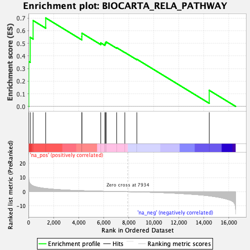

| | | Dataset | DE_genes2 |
| Phenotype | NoPhenotypeAvailable |
| Upregulated in class | na_pos |
| GeneSet | BIOCARTA_RELA_PATHWAY |
| Enrichment Score (ES) | 0.7013513 |
| Normalized Enrichment Score (NES) | 1.8433911 |
| Nominal p-value | 0.010791367 |
| FDR q-value | 0.08496381 |
| FWER p-Value | 0.226 |
Table: GSEA Results Summary

Fig 1: Enrichment plot: BIOCARTA_RELA_PATHWAY
Profile of the Running ES Score & Positions of GeneSet Members on the Rank Ordered List
Fig 2: BIOCARTA_RELA_PATHWAY: Random ES distribution
Gene set null distribution of ES for BIOCARTA_RELA_PATHWAY